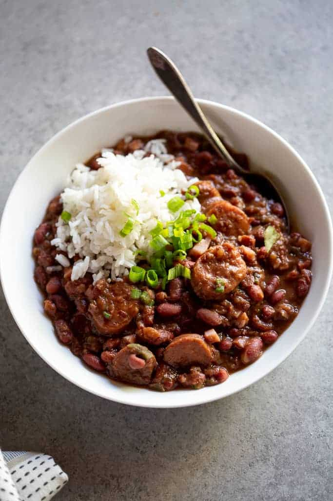

Instant Pot Red Beans and Rice

Description
Meal Description
Meal Description
1 pound andouille sausage , sliced 1/2-inch thick (smoked sausage can also be used)
1 heaping cup diced ham (optional)
4 tablespoon olive oil
5 cloves garlic, minced
1 medium yellow onion, finely diced
4 ribs celery, finely diced
1 medium green bell pepper, chopped
1 bunch green onions, chopped, divided
1 pound dried red beans (preferably New Orleans Camelia brand)
3 cups chicken broth
1 teaspoon black pepper
2 teaspoons Cajun Seasoning
3/4 teaspoons dried thyme
1 teaspoon dried oregano
3 bay leaves
1 cup salsa
1/2 cup fresh chopped parsley, chopped
Cooked white long-grain rice, for serving
Hot sauce, for serving
Instructions
Rinse beans and remove any small dirt or withered beans. Set aside. (You do not need to soak them).
Turn Instant Pot to saute setting. Brown the sausages in 1 tablespoon of oil until browned on both sides. Remove to a plate.
Add remaining oil to the pot, then add garlic and onions. Sauté over medium heat until onions become transparent. Add celery, bell pepper, and half of the green onions and sauté for 5 minutes.
Add red beans, black pepper, Cajun seasoning, thyme, oregano, bay leaves. Add water and chicken broth.
Set on MANUAL/HIGH Pressure for 55 minutes, followed by a 15-minute natural release.
Remove bay leaves. Spoon 1 ½ cups of the mixture into a bowl, mash until smooth (or use a food processor) and stir back into the pot. Add salsa, parsley, sausages and diced ham.
Simmer on SAUTE for 15 minutes, or until desired thickness.
Taste and adjust seasoning. Add up to 1 cup more water or broth if beans seem too thick.
Serve over white long-grain rice. Top with remaining chopped green onion, and season with hot sauce, if desired.